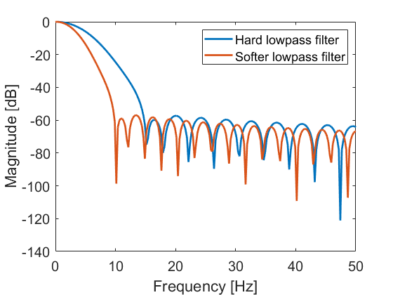

Cross country skiing example with ActivityPresenter
This example illustrates how to read and syncronize raw IMU data from Gaitup sensors, manipulate these data, and write the manipuated data syncronized with video and export this to a .aaz file to be visualized in ActivityPresenter. The example demonstrates first and foremost how to manipulate the data in MATLAB and how one can visualiz manipulated data in the ActivityPresenter. Specifically we read IMU data from the chest and left arm and lowpass the accelerometer data from the chest, and do a hard lowpassfilter of the gyroscope data from the left arm. The peaks of the filtered gyroscope data is detected to indicate the cycles of the cross country skiier as described in Rindal, O. M. H., Seeberg, T. M., Tjønnås, J., Haugnes, P., & Sandbakk, Ø. (2018). Automatic classification of sub-techniques in classical cross-country skiing using a machine learning algorithm on micro-sensor data. MDPI Sensors, 18(1). https://doi.org/10.3390/s18010075
Data: The data from this example can be manually downloaded from https://github.com/SINTEF/AutoActive-Matlab-toolbox/releases/download/v2.0.0_dataset/AutoActive_SampleData_xc_skiing.zip
Citationware: This code and data is citationware. If you use the data or code from this exampe you need to cite the following two papers:
- Albrektsen, S., Rasmussen, K. G. B., Liverud, A. E., Dalgard, S., Høgenes, J., Jahren, S. E., … Seeberg, T. M. (2022). The AutoActive Research Environment. Journal of Open Source Software, 7(72), 4061. https://doi.org/10.21105/joss.04061
- Rindal, O. M. H., Seeberg, T. M., Tjønnås, J., Haugnes, P., & Sandbakk, Ø. (2018). Automatic classification of sub-techniques in classical cross-country skiing using a machine learning algorithm on micro-sensor data. MDPI Sensors, 18(1). https://doi.org/10.3390/s18010075
Known issues when running this script:
- You need to be in the same "current folder" as the activityPresenter_cycles_examples.m script when running in MATLAB
- You need to install the Physilog 5 Matlab Tool Kit by downloading from https://media.gaitup.com/Physilog5MatlabToolKit_v1_5_0.zip and put the extracted folder in the \AutoActive-Matlab-toolbox\MatlabToolbox\external folder
- You need to have Python installed and awailable to MATLAB. Follow instructions on https://se.mathworks.com/help/matlab/matlab_external/install-supported-python-implementation.html
Author: Ole Marius Hoel Rindal (olemarius.rindal@sintef.no) Date: April 2022 Latest update: 19.09.2022
Contents
Set up paths, download and unzip data
We will first set up the necessary paths for the toolbox and the physiolog matlab toolkit do be able to read the IMU data from the gait up sensors. The data and video used in this example is downloaded from the url below to the github repository.
clear all; close all; % This file is in the toolbox, but this sets up the necessary paths addpath(genpath('../../../../AutoActive-Matlab-toolbox/')); % Please be sure that you have downloaded the Physilog 5 Matlab Tool Kit % from https://research.gaitup.com/support/ % or https://media.gaitup.com/Physilog5MatlabToolKit_v1_5_0.zip and put it % in the external folder addpath('../../external/Physilog5MatlabToolKit_v1_5_0/'); % Add the compiled .jar file of the Activity Presenter Toolbox jar_file = dir('../../jar/'); javaaddpath(['../../jar/',jar_file(3).name]) % Check if data is allready downloaded. If not, download and unzip! data_path = 'example_data' if ~isfile([data_path,'/raw_data/dataset_1_OMHR_compressed.mp4']) fprintf('Downloading and unzipping data...'); data_url = "https://github.com/SINTEF/AutoActive-Matlab-toolbox/releases/download/v2.0.0_dataset/AutoActive_SampleData_xc_skiing.zip"; mkdir(data_path); filename = "example_data/example_data.zip"; websave(filename,data_url); unzip(filename,data_path); delete(filename) fprintf('...done!\n'); end
data_path =
'example_data'
Read raw data from Gaitup Sensors
Read the raw IMU data from the .BIN files downloaded into MATLAB structs using the autoactive Gaitup plugin. NB! This is dependent on the Physilog5MatlabToolKit as specified in the paths above.
dataFolderGaitup = [data_path,'/raw_data/']; % path to data folder with the '.BIN' files gaitup = autoactive.plugins.Gaitup(); % create the matlab struct to import the gaitup files to gaitup = gaitup.loadFilesToFolder(dataFolderGaitup);
start reading gaitup data %% Loading 2 Files %% Reading : example_data/raw_data/0LA301.BIN %%%% Reading Header %%%% ------- Physilog : ID = 1301 --------- > Location : LA --------- > Type : = 0 / Firmware = 1.2.6/ --------- > Number of active sensors = 5 >>> 1) accel / Fs = 256 Hz >>> 2) gyro / Fs = 256 Hz >>> 3) baro / Fs = 16 Hz >>> 4) events / Fs = 256 Hz >>> 5) radio / Fs = 256 Hz %%%% Reading data %%%% Reading part:1/1 Number of sectors: 1741 >> 0 / 1741 sectors contain invalid data. Missing sectors: 0 Reading : example_data/raw_data/0ST283.BIN %%%% Reading Header %%%% ------- Physilog : ID = 1283 --------- > Location : ST --------- > Type : = 0 / Firmware = 1.2.6/ --------- > Number of active sensors = 5 >>> 1) accel / Fs = 256 Hz >>> 2) gyro / Fs = 256 Hz >>> 3) baro / Fs = 16 Hz >>> 4) events / Fs = 256 Hz >>> 5) radio / Fs = 256 Hz %%%% Reading data %%%% Reading part:1/1 Number of sectors: 1696 >> 0 / 1696 sectors contain invalid data. Missing sectors: 0 %% 2 Files sucessfully read %% %%%% Synchronizing files %%%% done reading gaitup data start organizing gaitup data done organizing gaitup data
Filter data
Create two Guasian filters with two different cutoff
h = gaussfilter(10); h_2 = gaussfilter(15); acc_xaxis_filtered_hard = conv(gaitup.sensorexample_data.raw_data.x0ST283.accel.data_accel1,h,'same'); acc_yaxis_filtered_hard = conv(gaitup.sensorexample_data.raw_data.x0ST283.accel.data_accel2,h,'same'); acc_zaxis_filtered_hard = conv(gaitup.sensorexample_data.raw_data.x0ST283.accel.data_accel3,h,'same'); accel_time = gaitup.sensorexample_data.raw_data.x0ST283.accel.corrected_timestamps_accel1; gyro_xaxis_filtered_hard = conv(gaitup.sensorexample_data.raw_data.x0LA301.gyro.data_gyro1,h_2,'same'); gyro_yaxis_filtered_hard = conv(gaitup.sensorexample_data.raw_data.x0LA301.gyro.data_gyro2,h_2,'same'); gyro_zaxis_filtered_hard = conv(gaitup.sensorexample_data.raw_data.x0LA301.gyro.data_gyro3,h_2,'same'); gyro_time = gaitup.sensorexample_data.raw_data.x0LA301.gyro.corrected_timestamps_gyro1;
Detect Cycles using gyro on arm
[peaks, amp] = peakseek(gyro_zaxis_filtered_hard,100,100); cycle_indications = zeros(1,length(gyro_zaxis_filtered_hard)); for i = 1:length(peaks)-1 if mod(i,2) cycle_indications(peaks(i):peaks(i+1)) = 3; else cycle_indications(peaks(i):peaks(i+1)) = -2; end end
Plot result to investigate
figure(1);clf;hold all; subplot(211);hold all; plot(accel_time,gaitup.sensorexample_data.raw_data.x0ST283.accel.data_accel1,'DisplayName','x-axis raw'); plot(accel_time,acc_xaxis_filtered_hard,'DisplayName','x-axis filtered'); plot(accel_time,acc_yaxis_filtered_hard,'DisplayName','y-axis filtered'); plot(gaitup.sensorexample_data.raw_data.x0ST283.accel.corrected_timestamps_accel1,acc_zaxis_filtered_hard,'DisplayName','z-axis filtered'); plot(gyro_time,cycle_indications,'DisplayName','cycle indicator'); for kk=1:length(peaks) text(gyro_time(peaks(kk)),3,num2str(kk)); end ax(1) = gca; legend; xlim([750 790]) title('Accelerometer data from chest');xlabel('Time');ylabel('Amplitude') subplot(212);hold all; plot(gyro_time,gyro_xaxis_filtered_hard,'DisplayName','x-axis'); plot(gyro_time,gyro_yaxis_filtered_hard,'DisplayName','y-axis') plot(gyro_time,gyro_zaxis_filtered_hard,'DisplayName','z-axis') plot(gyro_time(peaks),amp,'*','DisplayName','peak') plot(gyro_time,cycle_indications*500,'DisplayName','cycle indicator'); title('Gyroscope data data from arm');xlabel('Time');ylabel('Amplitude') legend; xlim([750 790]) ax(2) = gca; linkaxes(ax,'x');
Create struct to be written to AutoActive Session
cycle_indicator = struct(); % create struct % create time vector in micro seconds cycle_indicator.time = int64(gyro_time*1e6); cycle_indicator.cycle_indicator = cycle_indications';% create sine vector filtered_acc_chest = struct(); filtered_acc_chest.time = int64(accel_time*1e6); filtered_acc_chest.x_axis = acc_xaxis_filtered_hard; filtered_acc_chest.y_axis = acc_yaxis_filtered_hard; filtered_acc_chest.z_axis = acc_zaxis_filtered_hard;
Add annotation
Based on the plot in Figure 1 manually annotate the classical cross country skiing subtechniques. We will only annotate the cycles that are: * DIA = Diagonal Stride, annotation ID = 1 * DP = Dobbel Poling, annotation ID = 2 * TCK = Tucking (Downhill), annotation ID = 3
DIA = [20:21 38:62 75:95]; DP = [23:35 98:109]; TCK = [68 97]; % Define an object of the annotation plugin annotationProvider = autoactive.plugins.Annotation(); annotation_id = 1; for cycle = DIA mean_time = mean([gyro_time(peaks(cycle))... gyro_time(peaks(cycle+1))]); annotationProvider.addAnnotation(mean_time*1e6, annotation_id); end annotationProvider.setAnnotationInfo(annotation_id, 'Diagonal Stride', 'DIA', 'XC classical skiing diagonal stride'); annotation_id = 2; for cycle = DP mean_time = mean([gyro_time(peaks(cycle))... gyro_time(peaks(cycle+1))]); annotationProvider.addAnnotation(mean_time*1e6, annotation_id); end annotationProvider.setAnnotationInfo(annotation_id, 'Double Poling', 'DP', 'XC classical skiing double poling'); annotation_id = 3; for cycle = TCK mean_time = mean([gyro_time(peaks(cycle))... gyro_time(peaks(cycle+1))]); annotationProvider.addAnnotation(mean_time*1e6, annotation_id); end annotationProvider.setAnnotationInfo(annotation_id, 'Downhill Tucking', 'TCK', 'XC classical skiing downhill tucking');
Write to Auto Active .aaz file
Finally, we are going to write the data we want to display in the Activity Presenter program in a Auto Active .aaz file. We want to display the following data: + cycle indication + filtered accelerometer data from the chest sensor + synchronized video + annotations of type of sub technique for each cycle
% Create Auto Active Activity Presenter session object sw = autoactive.Session('XC Skiing'); % add the cycle indication to the session object. sw.cycle_indicator = struct2table(cycle_indicator); % mandatory metadata for archive sw.cycle_indicator.Properties.VariableUnits{'time'} = 'Epocms'; sw.cycle_indicator.Properties.UserData = struct(); % add filtered accelerometer data to the object sw.filtered_acc_chest = struct2table(filtered_acc_chest); sw.filtered_acc_chest.Properties.VariableUnits{'time'} = 'Epocms'; sw.filtered_acc_chest.Properties.UserData = struct();% mandatory metadata for archive % add information of the video to be stored in the .aaz file video = autoactive.Video(); video = video.addVideoToArchive([data_path,'/raw_data/dataset_1_OMHR_compressed.mp4']); % calculate the video offset compared to the data offset = accel_time(1)*1e6 + 7*10^6; video = video.setStartTime(offset); sw.video = video; % Add annotations sw.annotation = annotationProvider; % create archive object and file with name "XC_skiing_with_cycles". This % file can be read in the Activity Presenter software. aw = autoactive.ArchiveWriter(['XC_skiing_with_cycles.aaz']); % write session to archive aw.saveSession(sw); aw.close() clear aw;
ArchiveWriter <XC_skiing_with_cycles.aaz> - Open Session <XC Skiing> - Writing data autoactive.ArchiveWriter: Saving table <9356543a-3c7b-4d6e-9c4d-5e577830d86f/cycle_indicator.parquet> autoactive.ArchiveWriter: Saving table <9356543a-3c7b-4d6e-9c4d-5e577830d86f/filtered_acc_chest.parquet> Saving file to <9356543a-3c7b-4d6e-9c4d-5e577830d86f/video/dataset_1_OMHR_compressed.mp4> autoactive.ArchiveWriter: Saving data <9356543a-3c7b-4d6e-9c4d-5e577830d86f/video/dataset_1_OMHR_compressed.mp4> from <example_data/raw_data/dataset_1_OMHR_compressed.mp4> autoactive.ArchiveWriter: Saving textdata <9356543a-3c7b-4d6e-9c4d-5e577830d86f/Annotations/Annotations.json> autoactive.ArchiveWriter: Saving metadata <9356543a-3c7b-4d6e-9c4d-5e577830d86f/AUTOACTIVE_SESSION.json> Session <XC Skiing> - End autoactive.ArchiveWriter: ArchiveWriter <XC_skiing_with_cycles.aaz> - Closing
Implementation of the Gaussian lowpass filter used
function gaussFilter = gaussfilter(sigma) fsize=sigma * 6; x = linspace(-fsize / 2, fsize / 2, fsize); gaussFilter = exp(-x .^ 2 / (2 * sigma ^ 2)); gaussFilter = gaussFilter / sum (gaussFilter); % normalize end